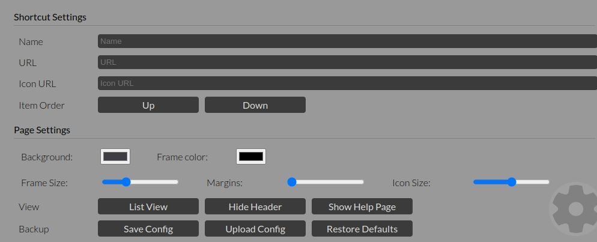
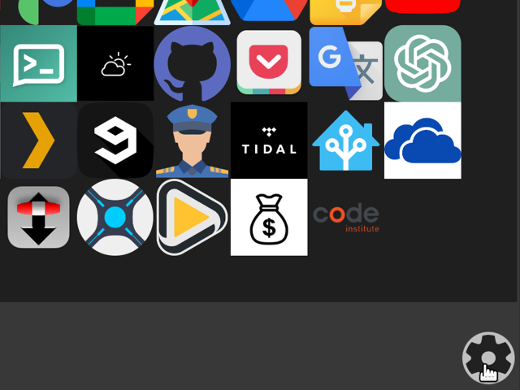
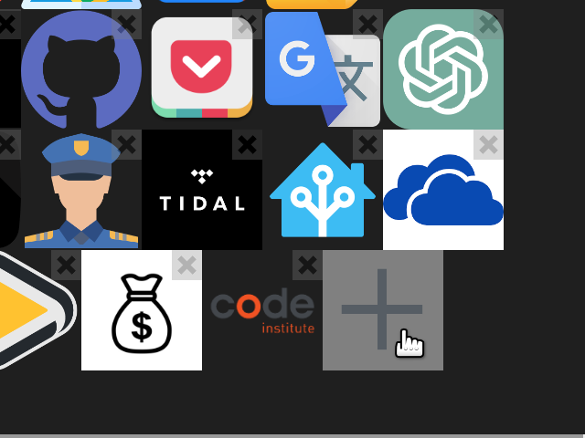
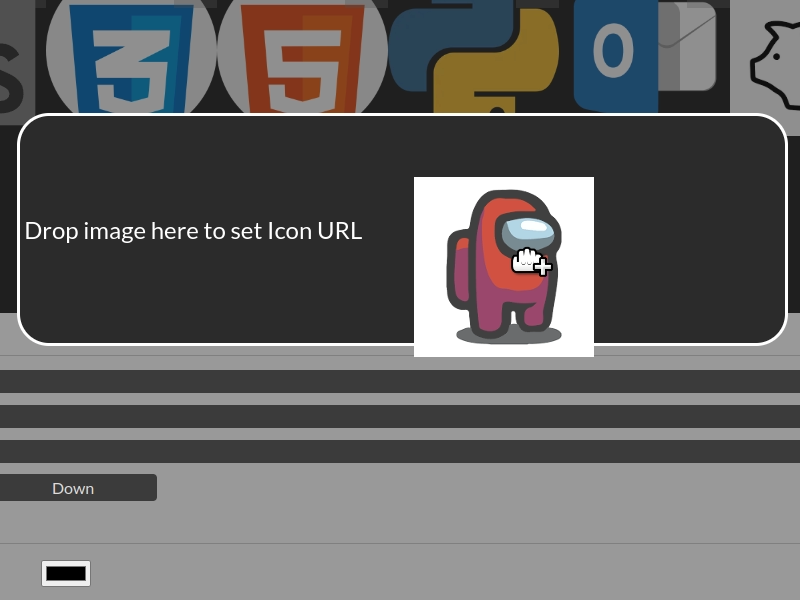
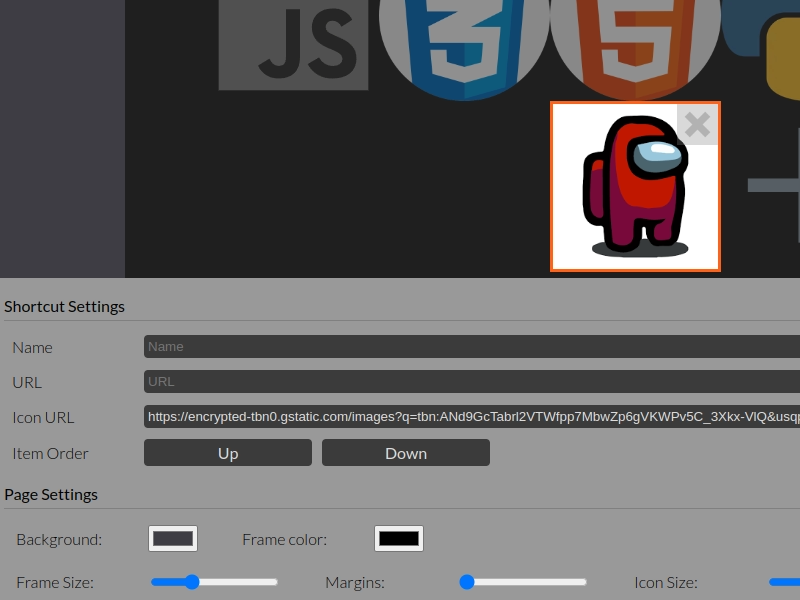
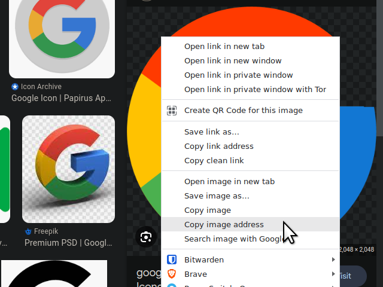

What is this?
This page is intended to be a customizable startpage, or homepage for design conscious users who want quick access to their most commonly visited websites.
By default links exist for a number of popular websites. These can all be edited to suit your needs.
If you would like to use this as a "new tab" page, I highly recommend the New Tab Redirect extension for chrome users.
New Tab Redirect Chrome Web Store LinkEdit mode
There is a small gear cog icon in the lower right hand corner of the page. This brings up the settings panel, and puts the page in “editing mode”. The links will not work in editing mode.
Click the gear icon again to go back to normal mode.
Settings Panel
| Item | Description |
|---|---|
| Name | This is the display name for each link. Totally up to you. |
| URL | This is the actual web address you would like the link to point to. |
| Icon URL | This is the link address of the icon you would like to use. Optional, but this is where the design comes to life! |
| Item Order | The “Up” and “Down” buttons change the position of the selected link. |
| Background | Changes the background color of the page. |
| Frame Color | Changes the color of the frame around the links themselves. |
| Frame Size | Changes the size of the box around the icons |
| Margins | Sets the spacing between items |
| Icon Size | Changes the size of the icons |
| List View | Changes the shortcut layout between an icon grid or list |
| Show/Hide the header | Hides the header for a cleaner, minimal look |
| Help page | Brings you to this page. |
| Save Config | Downloads a file with all the configuration data for the page. This is useful for backing up or replicating the page on multiple computers or browsers. |
| Upload Config | This restores a configuration from a previously saved file. |
| Restore Defaults | Reset all settings to defaults |
How to customize icons
The Easy way - drag and drop
- Click on the settings button at the lower right corner of the page.

- Click on the icon you would like to edit, or on the plus icon to create a new shortcut.

-
Enter a name you would like to use for the shortcut. (optional)
-
Drag an image from another website onto the startpage.

This should automatically update the icon URL field, and the icon should change to the new image.
- Drag a link from another page, or enter one manually in the URL field.

That’s it! Your shortcut icon is set up. Click the setting button again to close the settings panel.
The Hard way - manual input
You can also manually input the URL’s for the shortcuts, either by typing or pasting them into the input fields.
The easiest way to get the image URL is to right click on the image you want to use, and select “Copy Image Address” from the menu, and paste that into the icon URL field.

moving links
You can use the “Up” and “Down” buttons to change the order the links appear.
removing links
Simply press the “X” on the corner of each link to remove it.